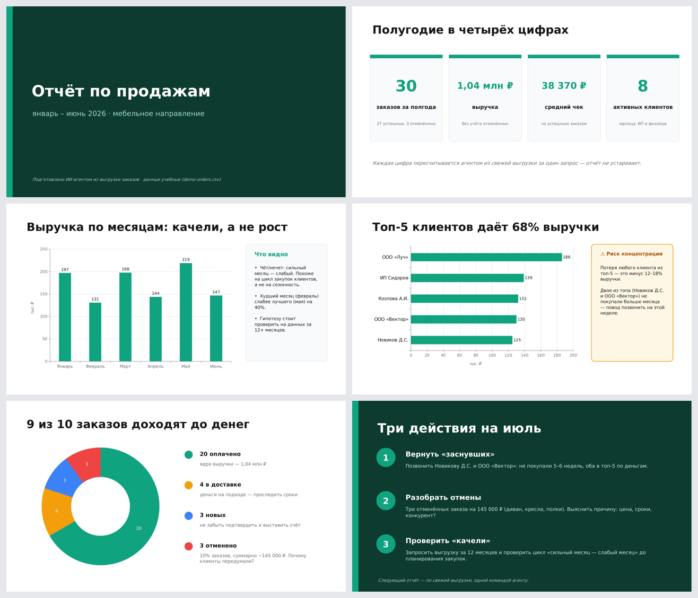
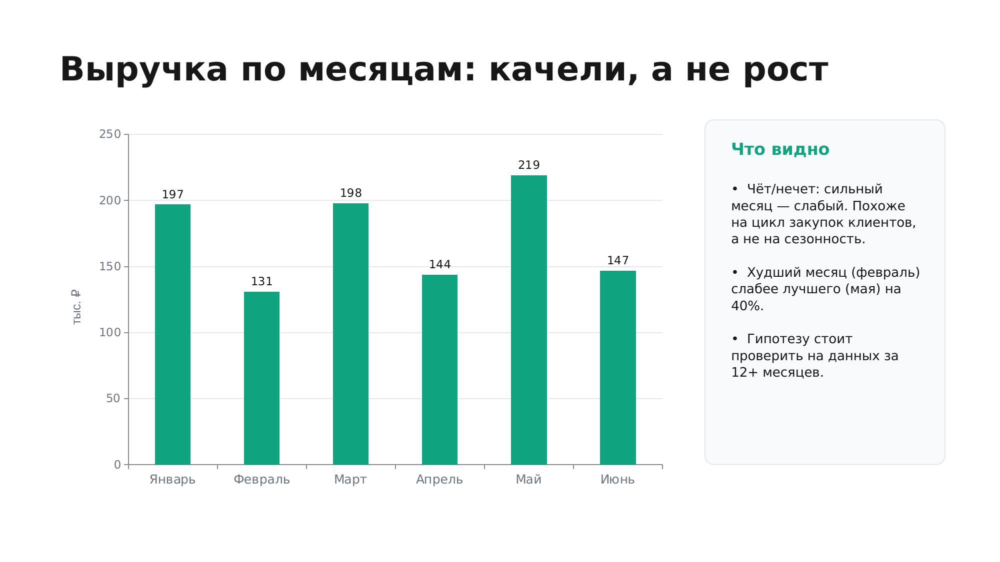

Презентацию PowerPoint из выгрузки заказов — титул, ключевые цифры, графики, выводы и план действий. Такую не стыдно открыть на совете директоров, показать банку или инвестору.
Excel — посчитать, Word/PDF — отправить, презентация — убедить: собрание с партнёрами, защита бюджета, планёрка с командой. Обычно на «сделать слайды к пятнице» уходит вечер в PowerPoint. Агент собирает черновик за минуты — твоя работа смещается с «двигать прямоугольники» на «что сказать».
Та же выгрузка, что и в прошлых уроках (своя или учебная), рабочая папка, агент запущен.
Плохой запрос: «сделай презентацию по данным». Хороший — говорит, кому она и что должна доказать:
Сделай презентацию PowerPoint по этой выгрузке для собственника бизнеса. История такая: продажи в целом здоровые, но есть три тревожных сигнала — нестабильная выручка по месяцам, концентрация на пяти клиентах и отмены крупных заказов. Закончи слайдом с тремя конкретными действиями. Стиль: минимализм, белый фон, зелёный акцент, без клипарта.
Учебный момент. Агент строит слайды из твоей истории. Если истории нет — получишь «братскую могилу» из графиков без вывода. Одна мысль на слайд, вывод в заголовке («Выручка по месяцам: качели, а не рост» — а не просто «Выручка по месяцам»).
Результат на учебных данных — шесть слайдов, собранных агентом из выгрузки:

Реальный результат (не макет): титул → цифры → динамика → топ клиентов → статусы → действия.
Скачать целиком: prezentaciya-prodazhi.pptx · PDF-версия
Открой готовый файл и пройди по слайдам с вопросами:

Хороший слайд отвечает на вопрос прямо в заголовке, а рядом с графиком — что из него следует. И проверь единицы измерения: здесь на оси подписано «тыс. ₽» — в первой версии подписи не было, и 186 читалось как 186 рублей.
Правки — тоже запросами, по одной за раз:
На слайде с топ-клиентами добавь предупреждение: двое из топ-5 давно не покупали.
Финальный слайд: перепиши действия конкретнее — кому позвонить, что выяснить.
Сделай титульный и финальный слайды тёмными, остальные светлыми.
Так же, как с Excel и Word: оформление и акценты не подразумеваются — их заказывают.
| Симптом | Причина | Решение |
|---|---|---|
| Слайды-простыни: много текста, нет мысли | Запрос без истории («сделай презентацию») | Сформулируй: для кого, что доказываем, чем заканчиваем |
| Графики без единиц измерения | Агент экономит место, а ты не проверил | Прогони шаг 2: «что тут в тысячах, что в штуках?» — и попроси подписать оси |
| Пёстрый дизайн «как из 2005-го» | Не задан стиль | «Минимализм, два цвета, без клипарта и теней» — или дай агенту пример нравящейся презентации |
| Уверенный вывод на слайде — а он спорный | Агент формулирует гипотезы как факты | Проси помечать гипотезы («похоже», «стоит проверить») и проверяй сам перед показом |
Собери презентацию «итоги месяца» по своим данным для самого требовательного зрителя, которого знаешь (партнёр, жена/муж, банк). Покажи. Запиши первый вопрос, который тебе задали, — в следующий раз пусть на него отвечает отдельный слайд.
Первую версию этой презентации агент собрал с двумя честными косяками: «1,04 млн ₽» не влезало в карточку и переносилось уродливо, а на графиках не было единиц измерения — 186 читалось как 186 рублей. Оба нашлись только при внимательном просмотре готовых слайдов. Мораль шага 2: не показывай презентацию никому, пока не пролистал её сам глазами зрителя.